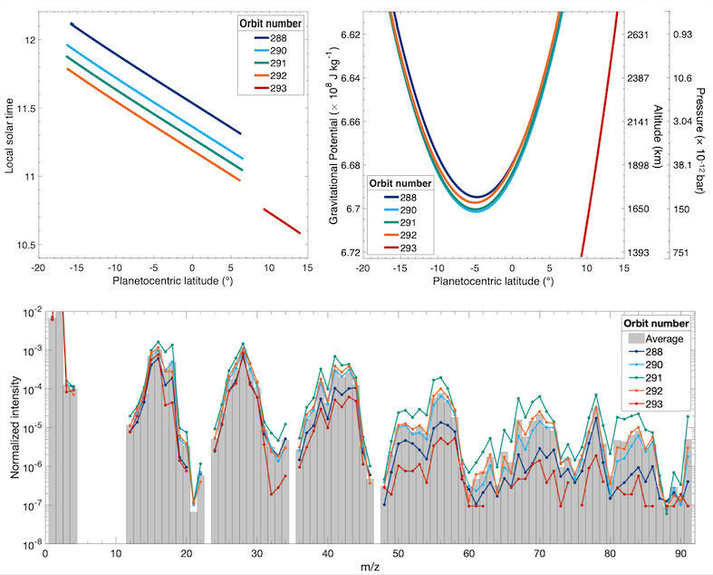

Ph.D. Thesis: Compositional Measurements of Saturn’s Upper Atmosphere and Rings from Cassini Ion and Neutral Mass Spectrometer
I earned my Ph.D. in Earth and Planetary Sciences from Johns Hopkins University where I focused on atmospheric data analysis and modeling. My thesis explored the compositional interactions between Saturn’s upper atmosphere and ring system using data from the Ion and Neutral Mass Spectrometer aboard NASA’s Cassini spacecraft. My work as a graduate student and research scientist has thus far resulted in 15 peer-reviewed publications, 16 conference presentations, and two funded grants totaling $610,502. Through these experiences I have developed problem-solving and data analysis skills and a keen eye for detail, project management, and organization.
The figures below show the local solar time (top left) and gravitational potential (top right), which is a proxy for altitude and atmospheric pressure, as a function of Saturn's latitude for the Cassini spacecraft orbits discuss in this analysis. The bottom figure shows the mass spectra for all orbits analyzed in my thesis. A mass spectrum is essentially a fingerprint of the atmosphere and the signal of a mass spectrum must be untangled to determine the relative abundances of different gases in the atmosphere. During my thesis I constructed a novel multiple linear regression model to analyze mass spectral data, allowing for a more in-depth statistical analysis of spaceflight mass spectrometry than previously existed.
The abstract to my thesis is presented below. The full version can be downloaded here.
Abstract
In September 2017, the Cassini-Huygens mission to the Saturn system came to an end as the spacecraft intentionally entered the planet’s atmosphere. Prior to entry, the spacecraft executed a series of 22 highly inclined orbits, the Grand Finale orbits (26 April 2017 to 15 September 2017), through the previously unexplored region between Saturn and its innermost D ring, yielding the first in situ measurements of the planet’s upper atmosphere and ring system. The trajectory of these orbits provided detailed measurements of the planet’s gravitational and magnetic fields, new views of the rings and poles of Saturn, and returned in situ measurements from various parts of the system. During Cassini’s final orbits and atmospheric entry, measurements from the Ion and Neutral Mass Spectrometer (INMS) revealed that the composition of Saturn’s upper atmosphere is intricately connected to Saturn’s D ring and much more chemically complex than previously believed. These direct measurements enable the investigation of the chemical composition of the upper atmosphere and rings, the thermal structure and energetics of the upper atmosphere, and the transfer of material from the rings to the atmosphere.
In this thesis, we provide an in-depth compositional analysis of the mass spectra returned from INMS during Cassini’s deepest Grand Finale orbits into Saturn’s atmosphere. This includes four orbits that measured the isothermal region of Saturn’s thermosphere (orbits 288, 290, 291, and 292) and atmospheric entry (orbit 293), which probed approximately 200 km deeper than the other orbits and detected an increase in temperature in Saturn’s thermosphere before losing contact with Earth. Signal returned from the instrument includes native Saturn species, as expected, as well as a significant amount of signal attributed to ices and higher mass organics believed to be flowing into Saturn’s atmosphere from the rings. All orbits aside from atmospheric entry recorded measurements at similar altitudes, latitudes, and local solar time near Saturn’s equatorial ring plane (closest approach near 5 degrees S) and returned fairly similar mass spectra. Measurements from atmospheric entry, which occurred around 9 degrees N and did not cross the ring plane, include less signal in regions of the spectrum attributed to non-native species, namely water and ammonia.
We identify and quantify species present in the spectra using a new, sophisticated mass spectral deconvolution algorithm specifically designed to handle the complexities involved with unit resolution spaceflight mass spectrometry data when limited calibration data is available. The retrieved mixing ratio and density profiles of major and minor constituents suggest that many species exhibit behavior indicative of an external source that is likely Saturn’s innermost D ring, and that this ring material heavily influences Saturn’s upper atmospheric composition. We use a 1-D diffusion model to analyze the distribution of species present in the spectra and calculate the downward external flux and mass deposition rates of ring volatile species into Saturn’s atmosphere. We conclude that during these observations ring material was being deposited into Saturn’s equatorial region at a rate on the order of 10,000 kg/s. An influx of such magnitude would deplete the D ring on the order of thousands of years, leading to the speculation that the observed influx must be caused by a transient phenomenon that could be a consequence of recent perturbations in the region. This influx of material could have far reaching implications on the energetics, dynamics, and temperature structure in this region and could influence haze and cloud production in Saturn’s uppermost atmosphere. These analyses are vital to improve our understanding of the interactions between Saturn and its rings, and the results are critical to advance photochemical modeling efforts of Saturn’s upper atmosphere.